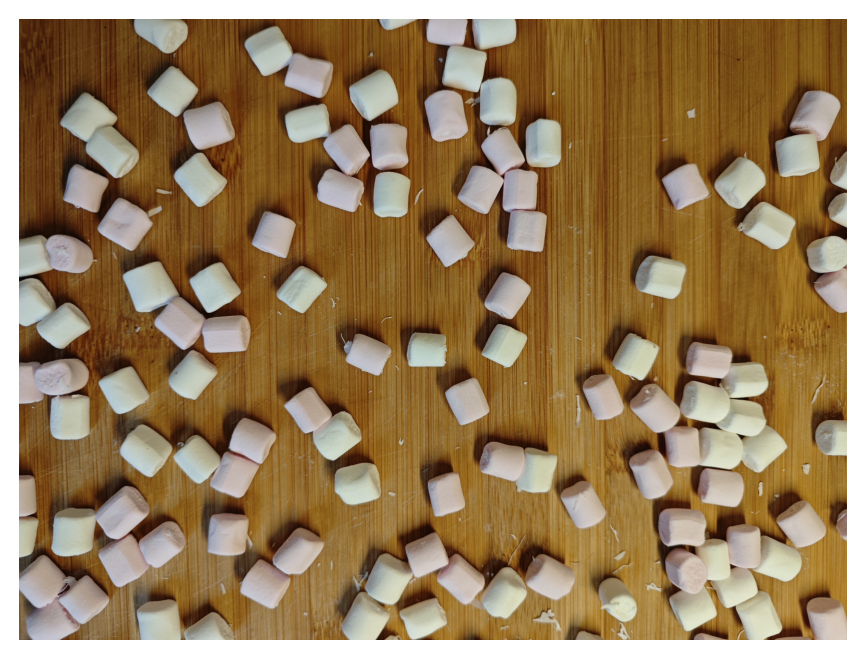
Week 6: mask engineering
massimo.vassalli@glasgow.ac.uk
DEFINE → DECOMPOSE → SPECIFY ⇄ DIAGNOSE → VALIDATE
| Week | Question |
|---|---|
| 5 | which pixels are objects? how many objects? |
| 6 | mask engineering: cleaning a mask; objects of different kinds inside it |
| 7 | from one image to many: splitting touching objects, generalisation |
By the end of today you should be able to:
ENG3090_lec06_inclass.ipynb: one problem, from DEFINE to VALIDATE. In class we run Part 1 (which pixels are marshmallows?); Parts 2–4 complete the problem, to run after the lecture, before the tutorialThe orange mark means: switch to the notebook. ▶ notebook, part 1
How many pink and how many white marshmallows are on the board?

Counted by hand: 113 marshmallows, 57 pink and 56 white.
| Step | What it does | How to show that it works | Week |
|---|---|---|---|
| open the image | nothing: check shape, type, range, metadata | print them; look at the picture and the histogram | 4 |
| pre-process | remove obvious artefacts: saturation, uneven light, noise | a digital image of the artefact, expected values by hand; points picked by hand | 4 |
| background vs foreground | a classification of pixels: the representation with the largest separation of points picked by hand, a threshold calculated from the data | separation; plateau of the count; points inside objects | 5 |
| clean the mask | remove specks and crumbs, fill holes, smooth edges | before / after images; the reference points still inside an object; plateau | 6 |
| classes inside the foreground | a second representation, thresholded inside the mask (a cascade); objects classified by what we measure on them | separation inside the mask; count per class against points | 6 |
| measure, count | label, area, descriptors | object by object against the reference; a photo held back | 5–7 |
Every step is a function with a rule. Every step gets a check you can show to someone else: that is what you will be asked for, from Assignment 5 onwards.
▶ notebook, part 1: which pixels are marshmallows?
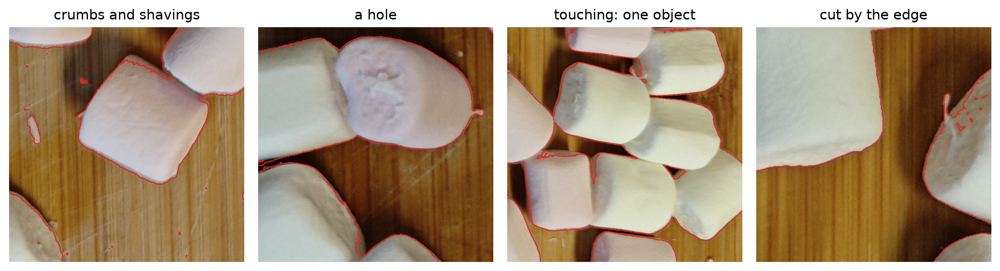
Saturation at or below Li’s threshold (0.341): 503 connected components, for about a hundred marshmallows. The threshold is right; the details are not: crumbs and specks, holes and dents, rough margins, objects cut by the edge.
First goal: remove the debris and clean up the margins. Touching marshmallows that form one object are fine for now: separating them is a different question, for later. The tools: operations on the shape of a mask, the morphological operators.
Every morphological operation slides a small shape, the footprint (or structuring element), over the mask.
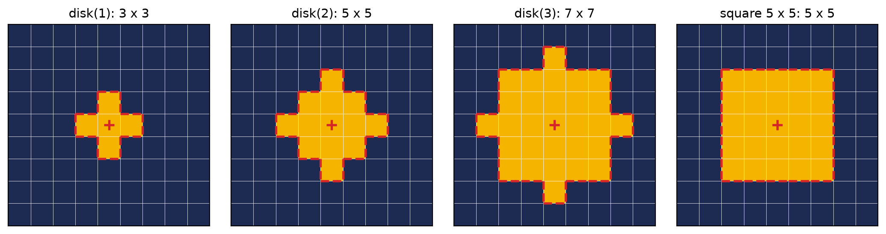
morphology.disk(r) is a disc of radius r pixels, 2r + 1 pixels across; the cross is its centre. The size of the footprint is the parameter of every operation: a length, in pixels, decided against the objects. On the next slides the footprint is disk(2) (5 pixels across), drawn dashed where it is placed.
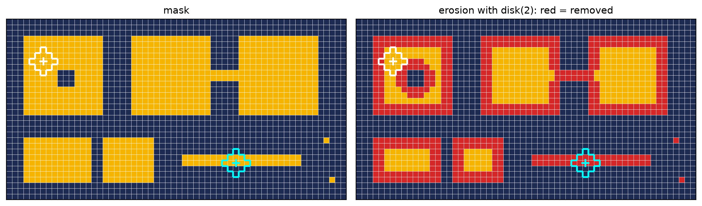
A pixel stays only if the footprint, centred on it, fits inside the object: \(A \ominus B = \{\, x : B_x \subseteq A \,\}\). White: the footprint fits, the centre stays. Cyan: on the crumb it does not fit, the centre is removed. Every object shrinks by the radius; anything thinner than the footprint (crumb, bridge, specks) disappears; holes grow. On a mask, erosion is a local minimum over the footprint.
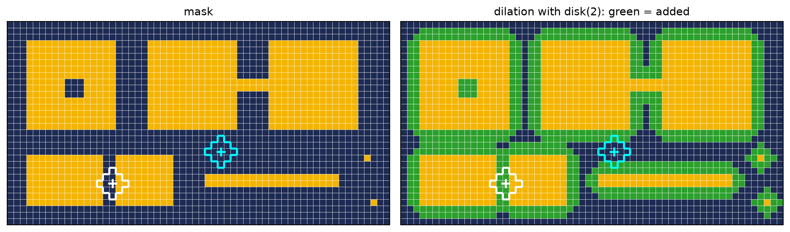
A pixel becomes object if the footprint, centred on it, touches the object: \(A \oplus B = \{\, x : B_x \cap A \neq \emptyset \,\}\). White: in the gap the footprint touches both objects, the centre is added. Cyan: it touches nothing, it stays background. Every object grows by the radius; small holes and narrow gaps close; objects that were close become one. A local maximum.
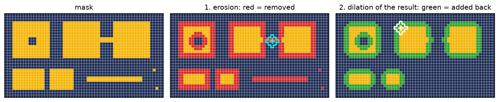
Erosion removes everything the footprint cannot fit in (cyan: the bridge), and shrinks the rest; dilation gives the rest its size back (white: the footprint on a corner of what is left). What vanished in step 1 (crumb, bridge, specks) has nothing left to grow from: it does not come back. Result: the objects almost as they were (corners rounded), the thin things gone. \(A \circ B = (A \ominus B) \oplus B\).
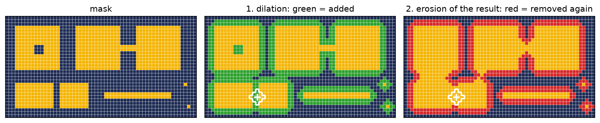
The same two operations in the other order. Dilation fills the hole and the gap and joins the two objects (white: the footprint in the gap touches both); erosion shrinks everything back, but the filled hole and gap are now inside an object: on the same pixel the footprint now fits, and the pixel stays. \(A \bullet B = (A \oplus B) \ominus B\).
The order decides the result. Erosion first: whatever is thinner than the footprint is lost for good (opening: “too thin to be an object”). Dilation first: whatever gap is narrower than the footprint is filled for good (closing: “too small to be a gap”). Neither knows what an object is: the size of the footprint does.
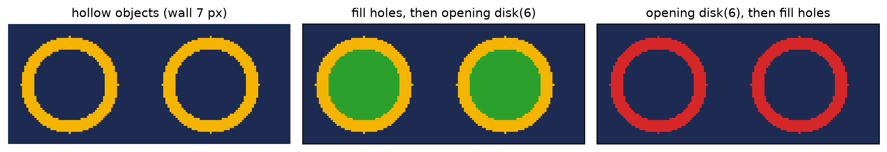
The same reasoning, one level up. A hollow object (a bright rim, like the triangles of week 5) with a wall thinner than the footprint: fill first, and the opening has a solid disc to work on; open first, and the wall is gone before there is anything to fill. The order of the operations is part of the rule, and goes into the prompt.
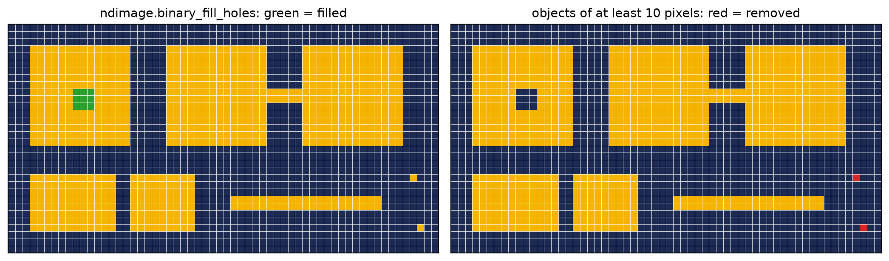
Different operations for different defects: decide which defect you are removing, then choose the operation.
| Operation | Removes | Parameter | Value | Why |
|---|---|---|---|---|
| fill holes | holes and dents inside a marshmallow (shadows, highlights) | none | ||
opening, disk(r) |
debris thinner than 2r + 1 pixels (shavings, fibres, specks); rough margins | radius r | 10 px | from the distance transform (next slides) |
| remove small objects | fragments too small to be a marshmallow | minimum area | 9000 px | a quarter of a marshmallow (about 36 000 px) |
| (not now) | touching marshmallows | a counting question, later |
In this order: fill first (so that an opening cannot break a dented marshmallow), open, then remove what is left too small.
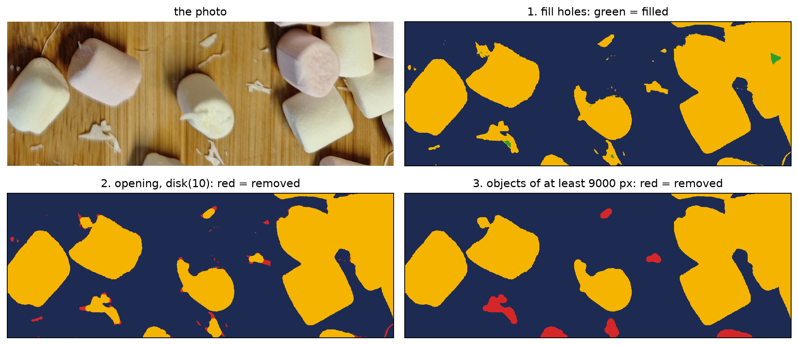
Each step on the whole mask, shown on one region. Filling closes the dents and highlights; the opening removes shavings and fibres and smooths the margins; what is left of the debris after the opening (13 pieces on the whole photo) goes with the size filter: 503 components before, 70 objects after.
The distance transform gives each object pixel its distance from the background: ndimage.distance_transform_edt(mask). Its largest value inside an object is the radius of the largest disc that fits in it; an opening with radius r removes the objects where no disc of radius r fits.
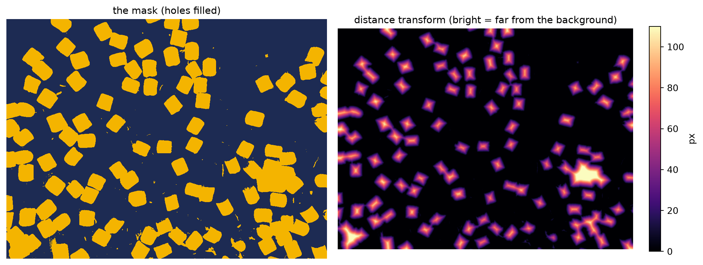
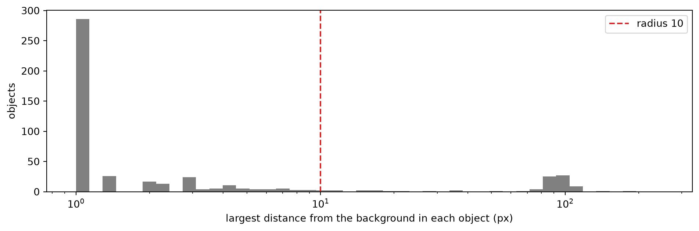
Two populations. 411 objects where no disc of radius 10 fits: shavings, fibres, specks, fringes. 67 where a disc of radius 70 or more fits: the marshmallows, alone or in groups. In between, only 14: pieces cut by the edge of the photo, fragments. An opening with radius 10 (a disc 21 pixels across) removes the first group and keeps the second; the few in between are left to the size filter. The value comes from a measurement, not from trying until the picture looks right.
The cleaned mask (fill, opening, size filter), with one parameter changed at a time; what is counted is the number of objects in the cleaned mask (touching marshmallows are still one object: not marshmallows yet).
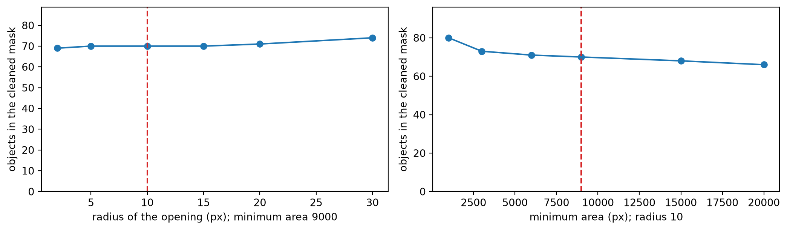
The radius is a measurement; the minimum area is a rule (a quarter of a marshmallow), stated in DEFINE: the weakest choice of the cleaning, and we will see it again.
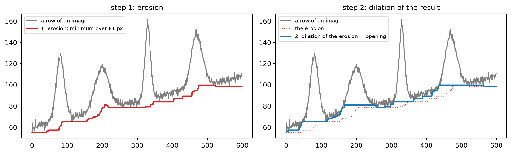
On grey levels, erosion replaces each value by the minimum over the footprint (here 81 pixels): every peak narrower than 81 pixels disappears, and the whole curve sinks. Dilation of that result takes the maximum of the minima: it lifts the curve back up to the background level, but the peaks are not there any more to be restored. The opening is the background, traced from below, without the objects narrower than the footprint.
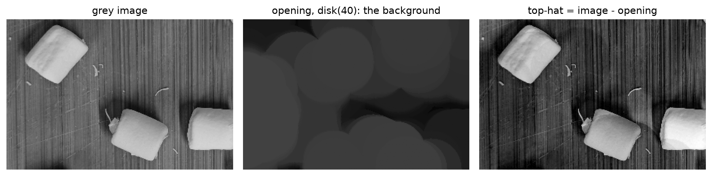
The grey version of the photo (reduced three times, for speed), opened with a disc wider than a marshmallow: every marshmallow is removed and only the wood is left, its slow changes of brightness included. Subtracting it (top-hat) leaves the marshmallows on a flat background. This is the rolling ball of week 4: a greyscale opening. It belongs to pre-processing (uneven light), decided by the same rule: wider than the objects, narrower than the changes of the light.
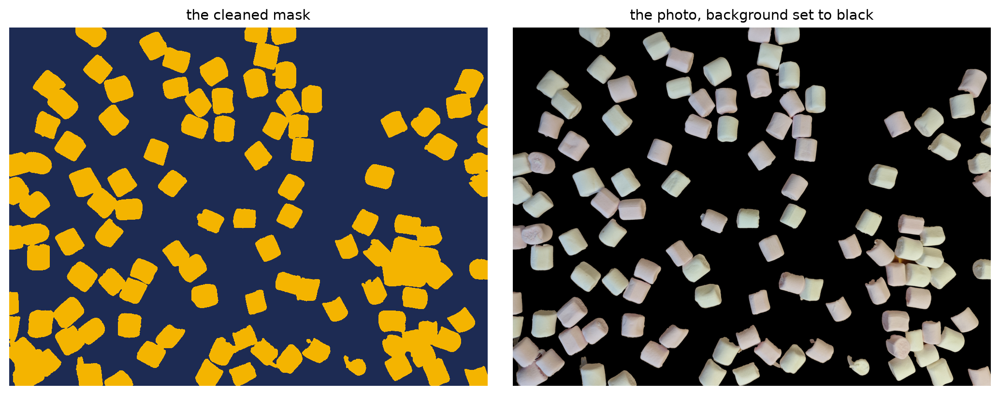
Background vs foreground is solved: every marshmallow is in the mask, the wood and the debris are not. Touching marshmallows are still one object, and that is fine so far: the next question is not “how many objects” but “which pixels are pink and which white”. From now on we only look inside the mask.
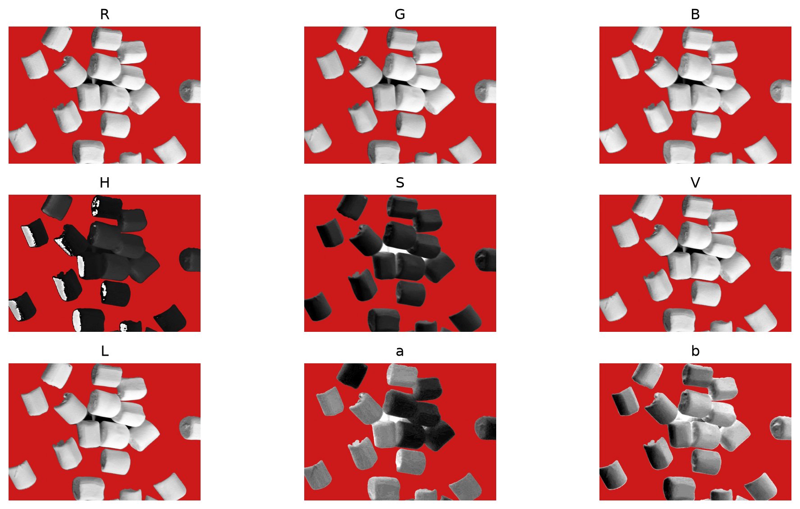
Each channel inside the mask only (background red), its grey scale stretched on the marshmallows. Which one shows pink and white as two different greys?
The points picked by hand in the notebook, Pink against White (score: best (sensitivity + specificity) / 2; plateau: the range of thresholds within 2 points of the best, as a fraction of the distance between the medians):
| R | G | B | H | S | V | L | a | b | |
|---|---|---|---|---|---|---|---|---|---|
| score | 58% | 90% | 56% | 79% | 73% | 69% | 86% | 100% | 84% |
| plateau | 50% | 5% | 100% | 54% | 16% | 11% | 3% | 61% | 6% |
Only a (green ↔︎ red) separates pink from white, and with room to spare. (Read the score first: a wide plateau of a useless score means nothing.) Saturation, the winner for the foreground, is no help here: each question has its own number. One decision after the other: first saturation (marshmallow or not), then a, inside the mask (pink or white). A cascade.
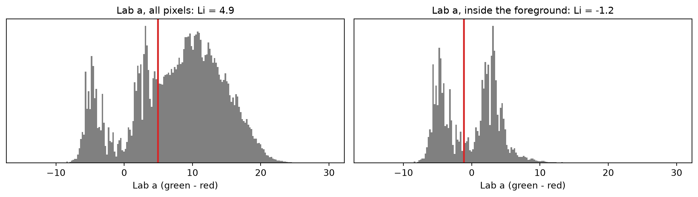
On the whole image the wood is most of the pixels: Li’s threshold (4.9) splits wood from marshmallows, and pink and white fall on the same side. Inside the foreground the wood is gone, two groups are left, and the same method (-1.2) lands between pink and white; scored on the Pink and White points (notebook, Part 3) it leaves the widest margin. The threshold depends on the population it is computed on.
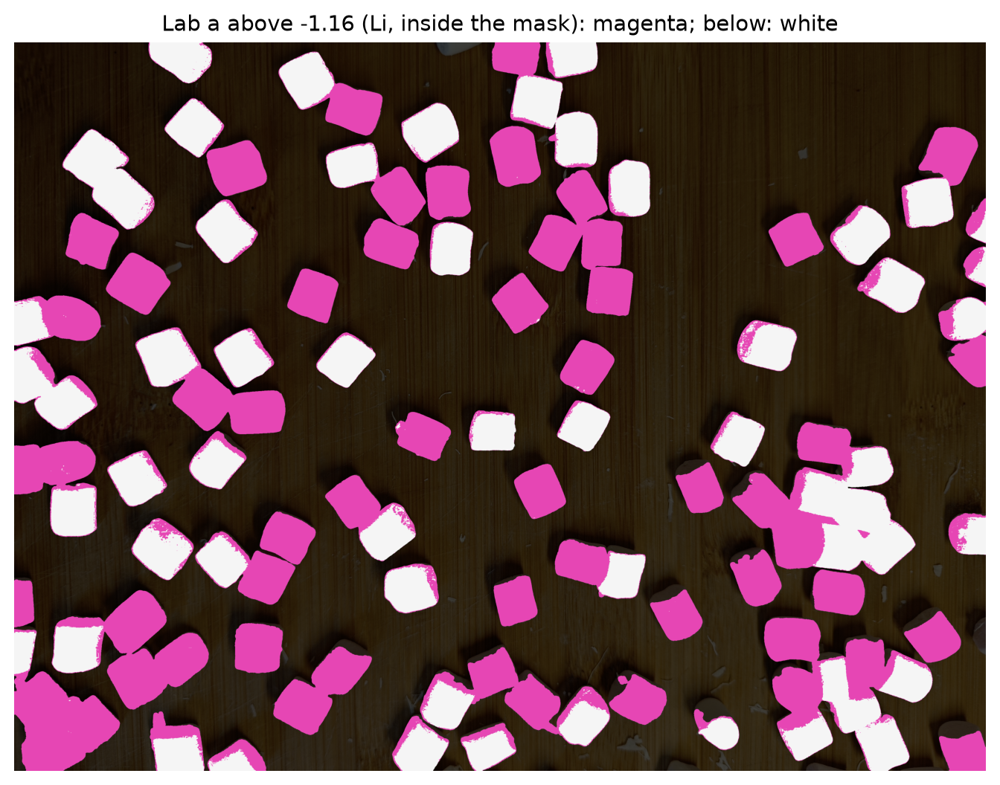
Before any number: look. Most marshmallows are one colour, as they should be. But there are specks and slivers of the wrong colour along the edges and in the shadows, and thin magenta rims around some white marshmallows (the edge pixels, part wood and part marshmallow).
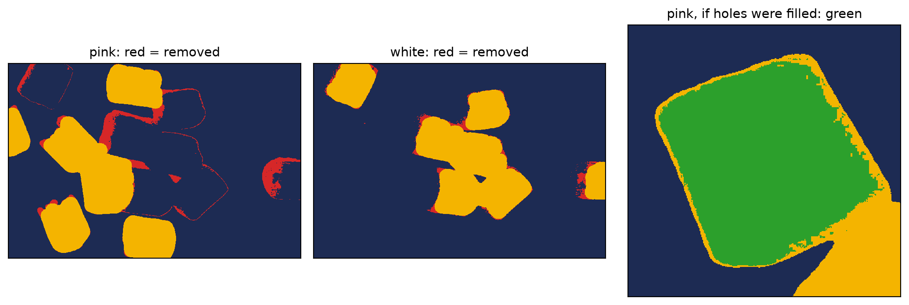
Each class mask: an opening with a much larger disc, disk(30) (61 pixels across; a marshmallow is about 190), then the objects smaller than 9000 px removed. Everything thinner than the disc goes: specks, slivers, rims; narrow necks between touching marshmallows of the same colour are cut. The target: pink only and white only. No fill holes this time (right): a pink rim closed around a white marshmallow would be filled, and the white marshmallow would become a pink object (10 on this photo).
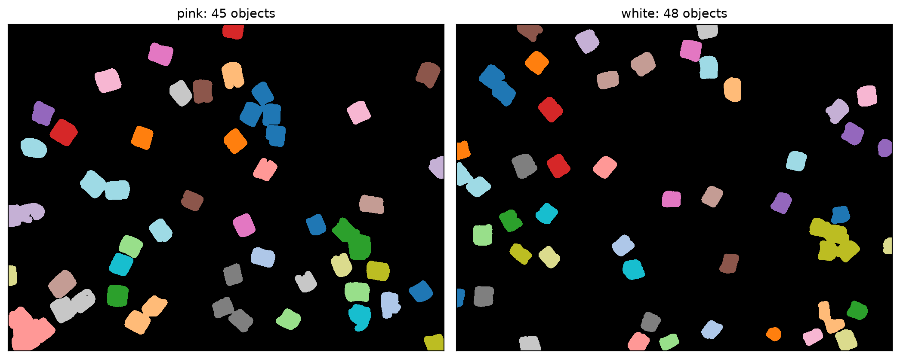
measure.label on each class mask: one colour per object. Marshmallows of the same colour that touch are still one object; marshmallows of different colours are now apart. How many marshmallows does each object hold? We measure.
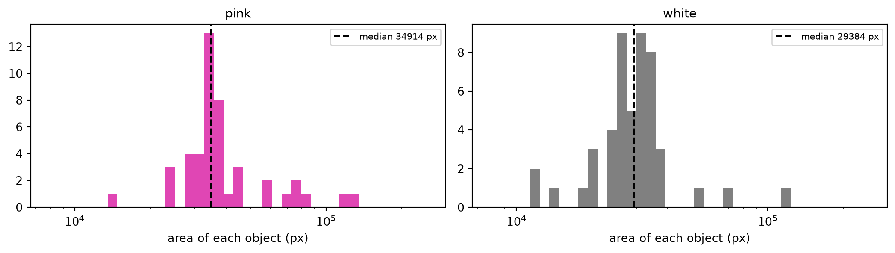
| Descriptor | regionprops |
Means |
|---|---|---|
| area | area |
pixels in the object |
| eccentricity | eccentricity |
of the ellipse with the same second moments: 0 for a disc, towards 1 for a line (elongation) |
| solidity | solidity |
area / area of the convex hull: 1 for a convex shape, lower for groups and odd shapes |
| mean colour | intensity_mean (with intensity_image) |
the average of a property over the object |
Most objects are one marshmallow: their areas pile up, and the median sits in that pile. Groups are the long tail to the right.
How many pink and how many white marshmallows are on the board?
The question asks for a number per class, not for each object. The criterion: the count by hand, per class.
Strategy 1. If most objects are one marshmallow, the median area is the area of one, and
\[ \text{count} \approx \frac{\text{total area of the class}}{\text{median area of its objects}} \]
Groups, pieces and single marshmallows all count through their area. One line of code; does it work?
| photo | class | objects | median area (px) | total area / median | by hand |
|---|---|---|---|---|---|
| built on | pink | 45 | 34914 | 55.0 | 57 |
| built on | white | 48 | 29384 | 51.0 | 56 |
| held back | pink | 48 | 38535 | 53.5 | 55 |
| held back | white | 45 | 32122 | 48.5 | 52 |
| radius of the class opening | 10 | 20 | 30 | 40 |
|---|---|---|---|---|
| pink | 56.8 | 55.5 | 55.0 | 56.2 |
| white | 51.9 | 51.2 | 51.0 | 50.6 |
Pink within a few marshmallows, on both photos; white about 8% low, on both photos; the answer hardly moves with the size of the disc. Does it work? DEFINE decides: “within 10%”, yes; “exactly”, no. And the error is not random: white is low every time. Where do the missing white marshmallows go?
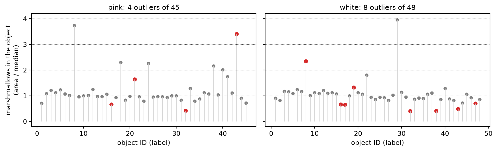
If DEFINE asked for every object to be right, the totals are not enough: each object should hold a whole number of marshmallows. Area / median for each object, by its label: most sit on 1, a few on 2 or 3. The outliers (red) are more than 0.3 away from a whole number, or smaller than 0.7 of one. Which are they?
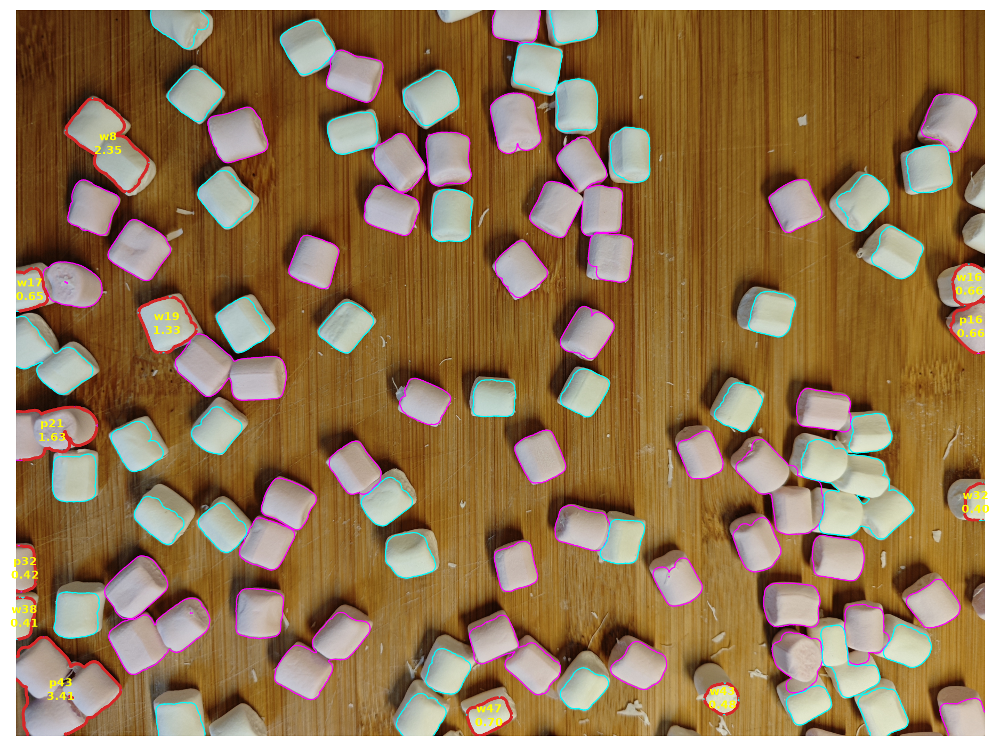
Every object, outlined in its colour; the outliers in red, with their ID (p pink, w white) and their area in marshmallows. Most of them touch the edge of the photo: a piece of a marshmallow, about 0.4 of one.
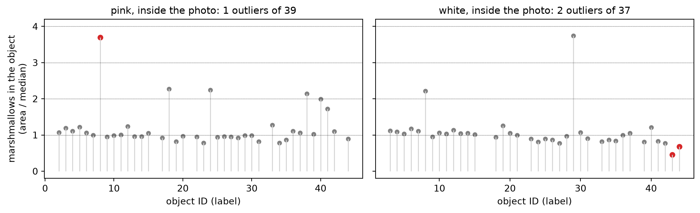
segmentation.clear_border(labels) removes every object that touches the edge of the image (6 pink, 11 white). A stricter DEFINE goes with it: an object counts only if it is wholly inside the photo (common in microscopy: cells cut by the field of view are left out). The median is recalculated on the objects left. 3 outliers are left.
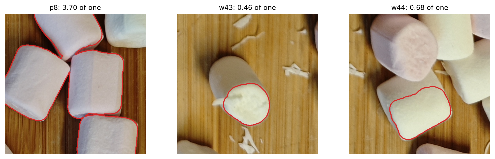
| radius of the class opening | 20 | 30 | 40 |
|---|---|---|---|
| outliers left, inside the photo | 6 | 3 | 6 |
Suggest why: a marshmallow standing on its end (a small disc, about half of one); one partly hidden under a neighbour; a group whose members lie differently (on the side, on the end), so its area is not a whole number. Could a different mask engineering separate them? The class step again, with a smaller or a larger opening: no better (table; smaller, more marshmallows stay joined; larger, more objects come out at a fraction of one). Few are left, and they are not a cleaning problem: the area of one marshmallow depends on how it lies. We accept them today, as we accept the rim of the white marshmallows (about 16% smaller than the pink ones). Splitting touching objects is week 7, with the same pipeline on 47 photos of this board.
Popcorn and almonds, again (week 5’s photo): how many almonds, how many kernels? The steps of today, your decisions:
For every step, a check you can show. Bring: lec06_src/data/popcorn.jpg, almonds.txt.
Cardamom and almonds on a dark wooden board.
Instructions, data and deadline on Moodle.
ENG3090 Biomedical Engineering Skills 3